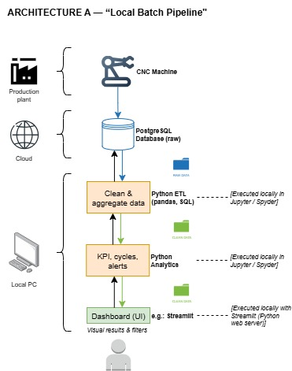
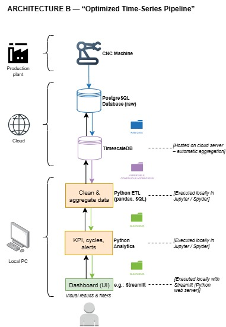

🧱 Architectural Evolution – CNC Data Analytics System
âš ï¸ Preliminary Note
The following architectural proposals (Architectures A, B, and C) have been initially designed with the support of ChatGPT (OpenAI) as a reference framework for the project “Understanding from Numerical Control Driven Machining Control.”
They represent conceptual drafts and working hypotheses, not final decisions.
All elements — including component choices, data flows, and execution layers — must be reviewed, discussed, and validated by the entire project team before implementation.
Any modification, simplification, or extension should be agreed upon collectively to ensure technical consistency and feasibility.
⚙️ Architecture A — “Local Batch Pipeline”
🔹 Concept
A simple, local-first architecture for initial experimentation.
All processing is performed on the user’s PC, while data are stored on a remote PostgreSQL database.
It enables the team to explore the dataset, understand machine behavior, and prototype the analytics pipeline.
This is the starting point for the project — low complexity, minimal infrastructure, and ideal for the early development phase.
🧩 Main Components
| Layer | Component | Execution / Hosting | Description |
|---|---|---|---|
| Production plant | CNC Machine | Physical system | Produces raw operational variables (axis position, spindle load, etc.) |
| Cloud / Server | PostgreSQL Database (raw data) | Hosted on UPM / remote server | Stores high-frequency machine signals |
| Local PC | Python ETL (pandas, SQL) | Executed locally in Jupyter / Spyder | Extracts and cleans data, performs simple aggregations |
| Python Analytics | Executed locally in Jupyter / Spyder | Computes KPIs, operation time, energy per program, and alerts | |
| Streamlit Dashboard (UI) | Executed locally with Streamlit (Python web server) | Visualizes results and provides basic user interaction | |
| User | Operator / Analyst | Local access | Explores data, applies filters, interprets results |
🔄 Workflow
- The CNC machine sends raw variables to the PostgreSQL database.
- Local ETL scripts retrieve and clean the data.
- Analytics modules compute machine indicators and alerts.
- The dashboard presents results interactively.
✅ Advantages
- Very simple to deploy and maintain
- Ideal for small datasets or offline analysis
- Full transparency and control for debugging and learning
âš ï¸ Limitations
- Query time increases with dataset size
- Manual updates required (no automation)
- No real-time feedback; purely batch operation
🕒 Adoption timeline
Used in Phase 1 (project start).
Goal: validate the data model, ensure database connectivity, and develop the first analysis scripts.
📷 Architecture Diagram

⚡ Architecture B — “Optimized Time-Series Pipeline”
🔹 Concept
An upgraded version focusing on performance and scalability.
PostgreSQL is extended with TimescaleDB, enabling hypertables and continuous aggregation for fast time-based queries.
This allows the system to handle larger volumes of CNC data with near-real-time responsiveness.
🧩 Main Components
| Layer | Component | Execution / Hosting | Description |
|---|---|---|---|
| Production plant | CNC Machine | Physical source | Streams operational data continuously |
| Cloud / Server | PostgreSQL (raw data) | Hosted on remote server | Stores unprocessed variables |
| TimescaleDB | Hosted on cloud server – automatic aggregation | Extends PostgreSQL to manage time-series efficiently | |
| Local PC | Python ETL | Executed locally in Jupyter / Spyder | Loads data, applies additional transformations and cleaning |
| Python Analytics | Executed locally in Jupyter / Spyder | Performs KPI calculation, energy/time estimation, and alert generation | |
| Streamlit Dashboard (UI) | Executed locally with Streamlit | Visualizes aggregated data with time filters and metrics | |
| User | Operator / Analyst | Local or LAN access | Uses the dashboard for insights and comparisons |
🔄 Workflow
- The CNC data are inserted into PostgreSQL (raw).
- TimescaleDB automatically builds hypertables and continuous aggregates.
- Local ETL scripts access pre-aggregated data instead of raw tables.
- Analytics compute KPIs and alerts efficiently.
- The dashboard displays up-to-date results.
✅ Advantages
- Fast queries thanks to TimescaleDB hypertables
- Continuous aggregation handled automatically on the server
- Scalable to millions of records
- Compatible with the same local Python workflow
âš ï¸ Limitations
- Requires server configuration for TimescaleDB
- Still partially manual (batch updates)
- No true real-time streaming yet
🕒 Adoption timeline
Used in Phase 2 (mid-project).
Goal: optimize performance and manage higher data volumes once the prototype is validated.
📷 Architecture Diagram

🌐 Architecture C — “Streaming / Real-Time Pipeline”
🔹 Concept
The most advanced version, enabling real-time monitoring and analytics.
This architecture integrates Apache Kafka for data streaming and Spark Structured Streaming for on-the-fly processing.
It combines real-time pipelines with long-term storage and visualization.
🧩 Main Components
| Layer | Component | Execution / Hosting | Description |
|---|---|---|---|
| Production plant | CNC Machine | Physical source | Continuously generates real-time signals |
| Cloud / Processing layer | Apache Kafka (stream) | Hosted on cloud server – streaming message broker | Receives live data, buffers, and distributes messages |
| Spark Structured Streaming | Executed on cloud server – real-time processing engine | Processes Kafka streams, detects patterns and alerts, forwards results | |
| PostgreSQL (operational storage) | Hosted on remote server | Stores latest operational data for fast queries | |
| TimescaleDB (historical storage) | Hosted on remote server | Maintains long-term time-series logs and aggregates | |
| Local PC | Python ETL | Executed locally in Jupyter / Spyder | Periodically integrates cloud data for additional analysis |
| Python Analytics | Executed locally in Jupyter / Spyder | Further exploration and validation of real-time results | |
| Streamlit Dashboard (UI) | Executed locally with Streamlit | Displays live machine state, alerts, and KPIs in near real-time | |
| User | Operator / Analyst | Web access | Monitors operations and system health interactively |
🔄 Workflow
- CNC sensors send live data streams to Apache Kafka.
- Kafka buffers and forwards events to Spark Structured Streaming.
- Spark aggregates and processes data in micro-batches, detecting operation cycles and anomalies.
- Results are written to PostgreSQL (for fast querying) and TimescaleDB (for historical logs).
- The Streamlit dashboard continuously updates with live KPIs and alerts.
✅ Advantages
- Real-time data ingestion and processing
- Immediate alerting and visualization
- Hybrid storage (short-term + long-term)
- Scalable to industrial workloads
âš ï¸ Limitations
- Higher infrastructure complexity
- Requires Kafka and Spark deployment
- Needs reliable network and cloud configuration
🕒 Adoption timeline
Used in Phase 3 (final stage).
Goal: demonstrate real-time analytics capability, provide continuous monitoring, and connect the full data lifecycle (machine → cloud → user).
📷 Architecture Diagram

🧠Overall Evolution Summary
| Stage | Main Goal | Key Technologies | Deployment Level |
|---|---|---|---|
| A – Local Batch | Prototype, data understanding | PostgreSQL, Python (pandas), Streamlit | Local execution |
| B – Time-Series Optimized | Performance & scalability | TimescaleDB, Python (ETL/Analytics) | Local + Cloud |
| C – Streaming / Real-Time | Real-time insights & automation | Kafka, Spark, PostgreSQL, TimescaleDB | Cloud + Local UI |
🔄 Progressive Implementation Strategy
- Phase 1: Start with Architecture A → focus on ETL pipeline, KPIs, and dashboard.
- Phase 2: Migrate to Architecture B → activate TimescaleDB and optimize queries.
- Phase 3: Extend to Architecture C → integrate streaming for real-time feedback and alerts.
This progressive approach ensures that:
- The team learns the full data lifecycle step by step.
- Each phase delivers a working, demonstrable system.
- The final architecture (C) aligns with modern Industry 4.0 and IoT paradigms — turning raw CNC signals into real-time, actionable intelligence.